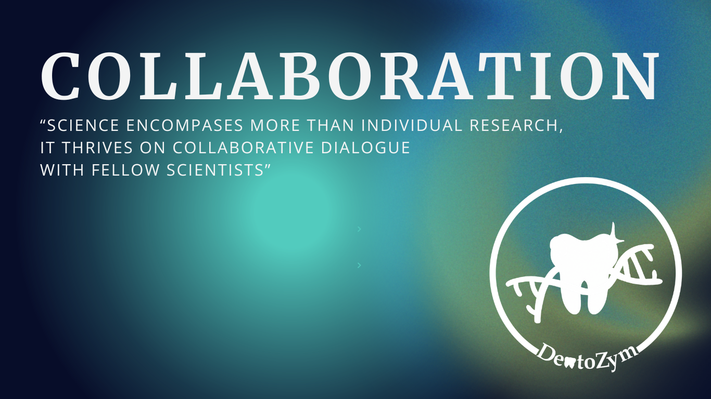
Baden-Württemberg Meet-up
Science encompasses more than individual research — it thrives on collaborative dialogue with fellow scientists, explaining and delving into their research realms. Hence, at the outset of our iGEM journey, we aspired to connect with fellow iGEM teams from Baden-Württemberg, eager to acquaint ourselves with their projects. We orchestrated the Baden-Württemberg Meet-Up this year to embrace this vision. We extended invitations to iGEM Freiburg, iGEM Heidelberg, and iGEM Tübingen, warmly welcoming their members to this Meet-Up at the University of Stuttgart.
The event unfolded with enlightening presentations. iGEM Heidelberg took the stage first, showcasing their project "RemixHD" and sharing their team's journey within a 20-minute talk. Following a brief interlude, iGEM Tübingen presented their project and team. Following a short break, we introduced our project, "DentoZym" and our team. Each presentation concluded with an engaging question and answer session, enabling us to delve into our fellow teams' projects, methodologies, and workflows. This mutual exchange of insights allowed us to offer constructive feedback and deepen our understanding of each other's endeavours.
Regrettably, iGEM Freiburg encountered significant train delays, preventing their project presentation. But luckily, they managed to get into the networking event at the end of the introduction rounds. To get to know each other better in a pleasant and relaxed atmosphere, we all went bowling, where conversations flowed freely, centered not only on iGEM projects but also on various engaging topics.
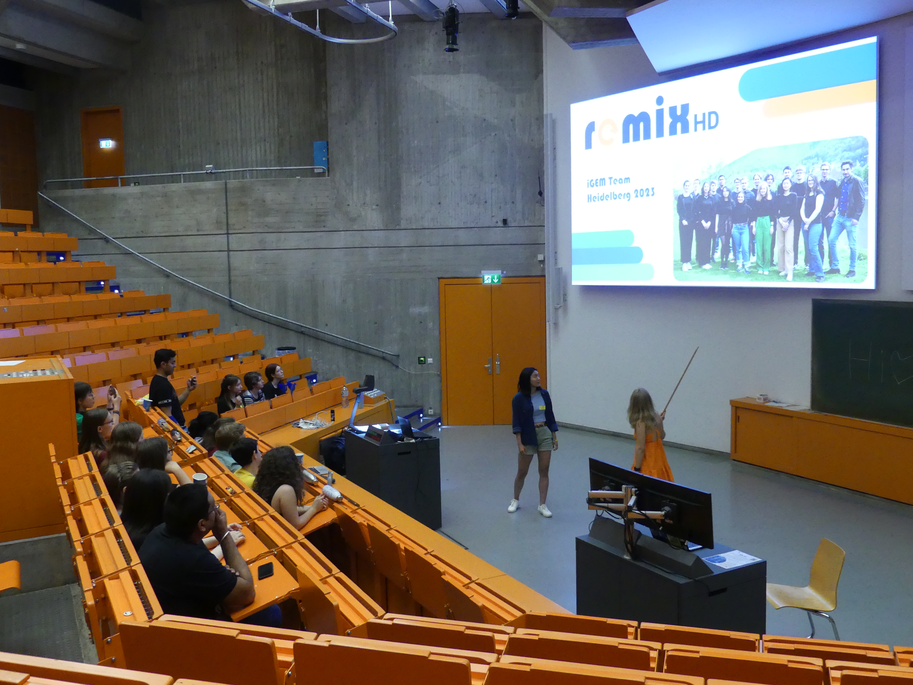
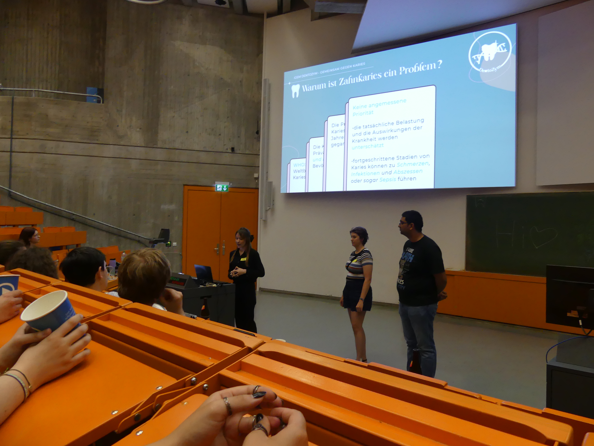
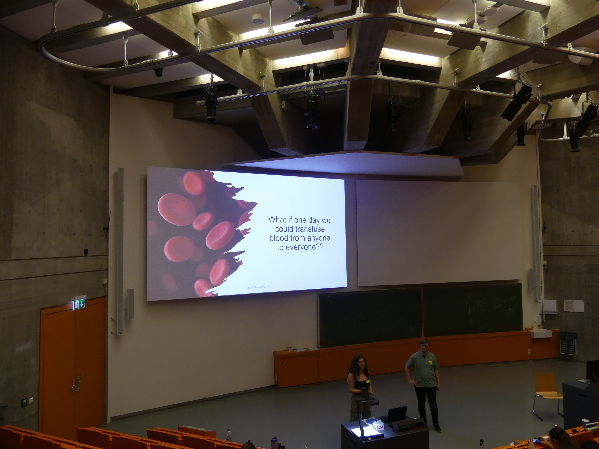
European Meet-up
iGEM transcends the scope of researching a designated theme, preparing for the Paris Jamboree, and achieving experimental breakthroughs. It embodies engaging dialogues with other teams regarding their projects and creating inter-team connections. To fulfil this objective, we were actively involved in the Junior Jam - The European Meet-up held in Münster, Germany.
During our time in Münster, we immersed ourselves in the Meet-up experience, seizing the opportunity to interact with fellow iGEMers, gaining insights into their projects, and showcasing our own. Throughout these Meet-ups, we were delighted to attend numerous presentations and present our project during the designated session. Afterwards we engaged in enlightening Q&A sessions related to our projects and partook in various engaging activities.

This weekend was captivating and enriching, providing us with a wealth of knowledge and the chance to connect with remarkable individuals.
Collaboration with Kaiserlautern
In addition to our work in the lab and research activities, we were interested in understanding public opinions about biology, mainly focusing on genetic engineering. To this end, we initiated a small project in collaboration with iGEM Kaiserslautern, where we jointly designed and conducted a survey to investigate public opinions about genetic engineering in various cities.
This survey used 19 questions to probe opinion patterns regarding genetic engineering and its applications. We aimed to investigate if factors such as location, age, and gender influenced the baseline attitudes toward genetic engineering and if there were significant differences between various demographic groups.
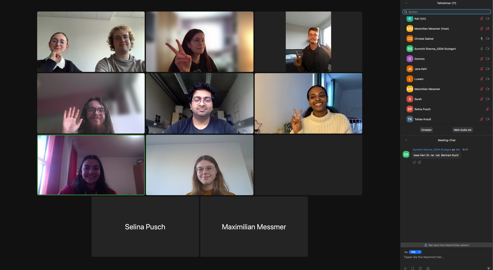
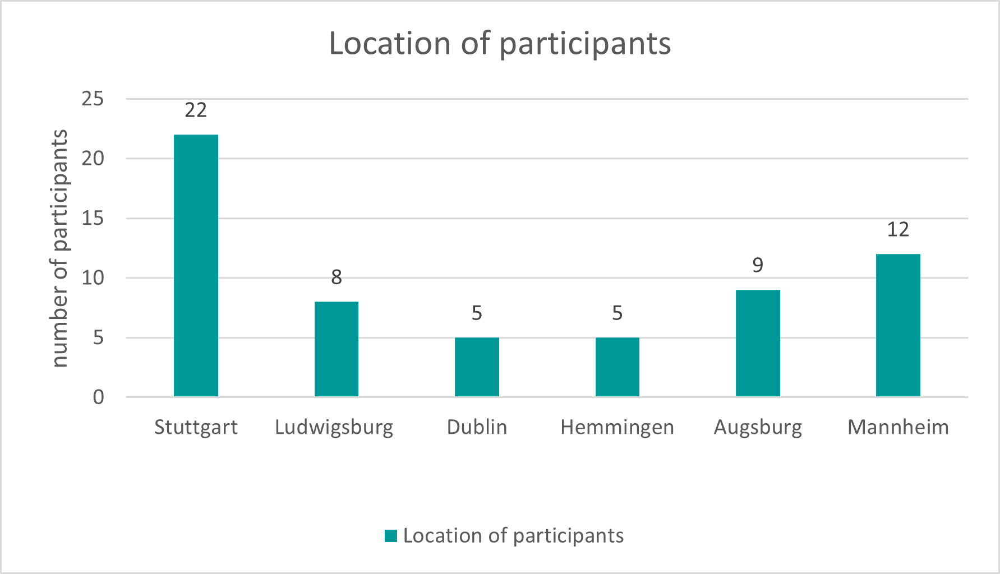
We conducted the survey both digitally and using traditional methods. Unfortunately, we could not reach many participants from various cities due to time constraints. Therefore, we could only invest a little time and effort to achieve our primary goal of having more than six respondents per city to discern differences regarding genetic engineering across different cities. A total of 126 individuals from over twelve cities participated in the survey, as illustrated in Figure 1, depicting cities with more than 5 participants.
Since we only have two cities with more than 10 participants, we decided to study people's opinions not by city or by age group, but as a whole to see how people feel about genetic engineering.
It is noteworthy that this survey was primarily filled out by people between the age of 20-29, who were mostly female and 45% people were studying or working in the fields of biology or medicine. Therefore, this survey has an age, gender, and knowledge bias. As shown in Figure 2, most respondents had some background in biology and are between 20-29.
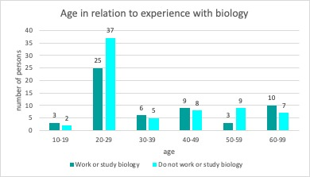
Our initial investigation aimed to determine respondents' understanding of genetic engineering concepts and identify patterns across different age groups. As depicted in Figure 3, slight differences were observed among age groups. Notably, individuals above 60 years old exhibited a similar level of understanding as those with little to no knowledge about genetic engineering. Surprisingly, the 10-19 age group displayed a similar pattern. In contrast, most respondents in other age groups demonstrated some level of understanding of genetic engineering concepts, with around two-thirds of those aged 30-39, 40-49, and 50-59 expressing explicit or partial knowledge. The 20-29 age group exhibited the highest understanding, with 60% of respondents indicating familiarity with genetic engineering concepts. These differences in understanding across age groups can be attributed to various factors.
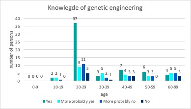
Next, we wanted to investigate what most people think when they hear "genetic engineering." To do this, we asked respondents to indicate which of the following areas they associate genetic engineering with. The areas surveyed were medical research and therapy, agriculture and food production, modification of human DNA, environmental impact, ethical concerns, and others. The results are shown in Figure 4.
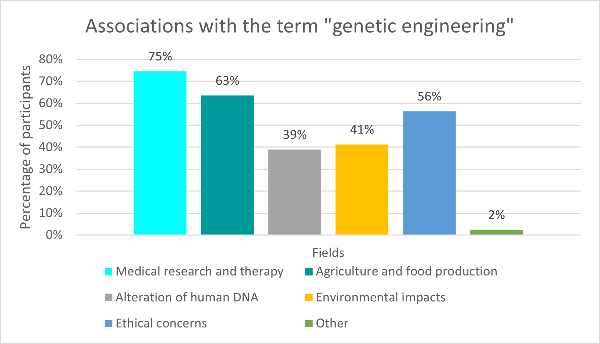
Most respondents associated genetic engineering with medical research and therapy, agriculture and food production, and ethical concerns, which was to be expected. The association of genetic engineering with medical research and therapy can be attributed to advances in genetic engineering and biology in general that have contributed to the Development of new therapies, especially in the aftermath of the Corona pandemic. Because people in Germany have had concerns and criticisms about genetically modified foods for years, most associate genetic engineering primarily with plant foods and dairy products, as most respondents indicated. During the survey, most respondents expressed moral concerns about genetic engineering, especially when it comes to manipulating human DNA or genetically modifying organisms.
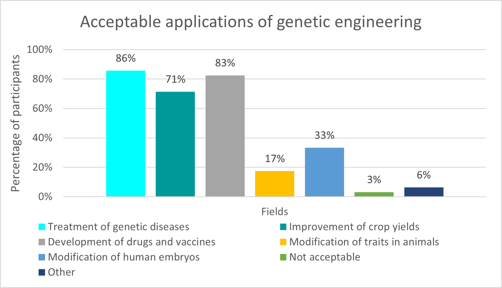
Having seen that most respondents associate genetic engineering with at least one area, we wanted to explore in which applications respondents find genetic engineering acceptable. The choices were Treatment of genetic diseases, Improvement of crops to increase crop yields, Development of drugs and vaccines, Modification of traits in animals to improve food quality, Modification of human embryos to prevent genetic defects, and I do not find any applications of genetic engineering acceptable, Other (please specify field below). Figure 5 shows the results.
As can be seen in Figure 4, most associate genetic engineering with medicine and research. Also, in relation to this question, most find the use of genetic engineering in the treatment of genetic diseases and in the Development of drugs and vaccines acceptable, which is what we expected. We think this acceptance is because of the Corona pandemic and how the Development of Corona vaccines went. The majority of the respondents are from the research field, which explains their acceptance. We did not expect that so many people would accept genetic engineering to improve crops and increase crop yields. Here, we had expected most to be more dismissive, similar to the use of genetic engineering in the context of animals since we know from news reports and opinions that people tend to be more dismissive of genetic engineering in the context of food. Equally surprising was the higher level of acceptance among respondents regarding modifying human embryos to avoid genetic defects. Initially, we expected very few respondents to show acceptance, but not sixfold compared to our original assumption.
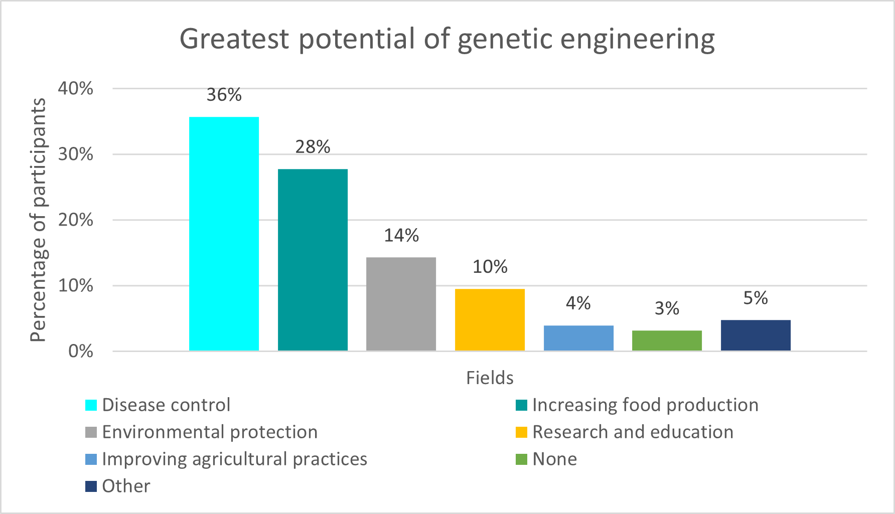
Next, we wanted to see which areas respondents saw the tremendous potential for genetic engineering to address global challenges. As seen in Figure 6, most respondents see the most significant potential for genetic engineering in combating disease and medical applications, as well as increasing food production and fighting hunger, which is not surprising to us and is consistent with previous data.
Having explored respondents' associations, acceptance, and perceived potential of genetic engineering, we then delved into respondents' concerns regarding genetic engineering. Figure 7 showcases the results, highlighting that the majority expressed concerns about misuse of genetic engineering, unforeseen long-term effects on human and animal health, the concentration of power and control over food and resources, and environmental impacts. These aspects were anticipated to be common concerns.
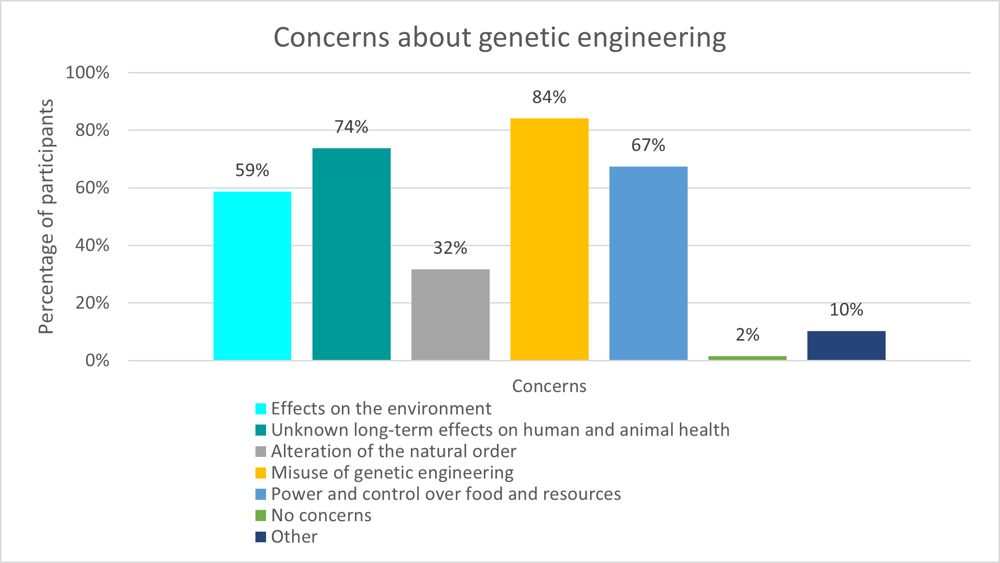
Figure 7 clearly illustrates that society reacts to the application of genetic engineering with justified concerns and a certain degree of caution. These concerns relate to the potential consequences for human and animal health and the far-reaching effects on the environment and socioeconomic structure, particularly concerning control over food and resources. It is critical to take these concerns seriously and integrate them into the discourse on the Development and application of genetic engineering.
In addition to the concerns mentioned above about genetic engineering, we also wanted to survey and analyze respondents' opinions about using genetic engineering to modify the human genome to prevent genetic diseases. As illustrated in Figure 8, we found unexpected trends when investigating respondents' opinions on using genetic engineering to modify the human genome to prevent genetic diseases. The majority expressed a willingness (either "Yes" or "Maybe") to consider such applications, contrary to our initial expectations.
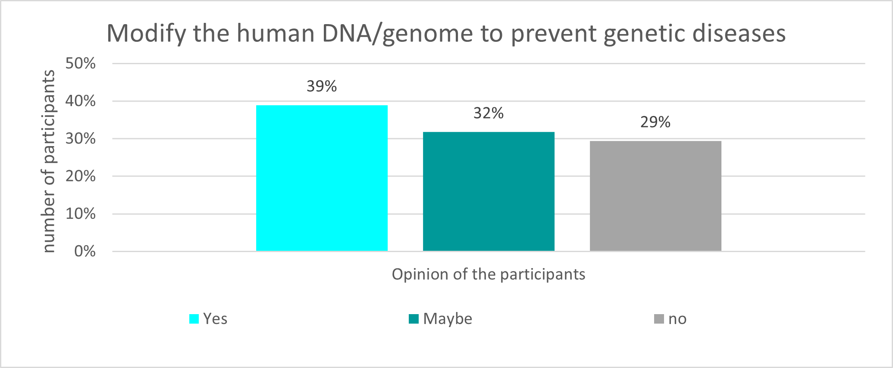
Some possible reasons for this surprising trend could be multiple. First, a growing awareness of advances in genetic engineering and its potential benefits for preventing and curing genetic diseases could lead to a more positive attitude toward modifying the human genome. The possibility of preventing severe genetic diseases is a motivating factor.
Second, ethical considerations might play a role, as some respondents might consider that the prevention of genetic diseases through the use of genetic engineering is a morally acceptable use of this technology.
Third, the nature of the question and its context in the survey may also have influenced responses. A more nuanced question that explored the potential benefits and risks of genetic engineering in more detail could have yielded different results.
In conclusion, this comprehensive survey sheds light on the multifaceted public opinions concerning genetic engineering. It emphasizes the importance of considering diverse perspectives and concerns when discussing and implementing genetic engineering technologies. Further exploration and in-depth analyses are essential to understand society's stance toward this evolving and influential technology.